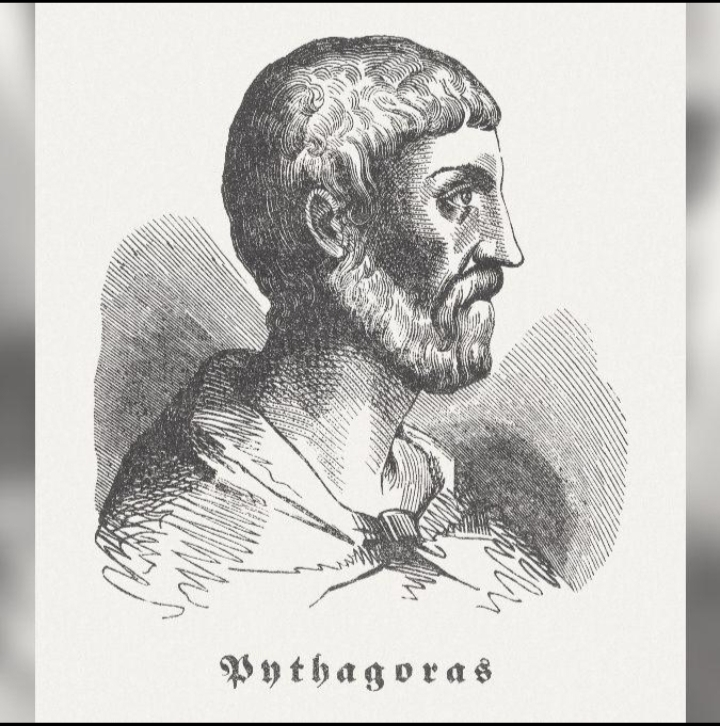
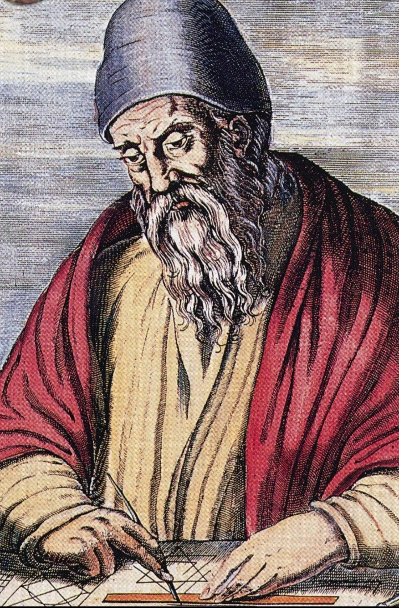
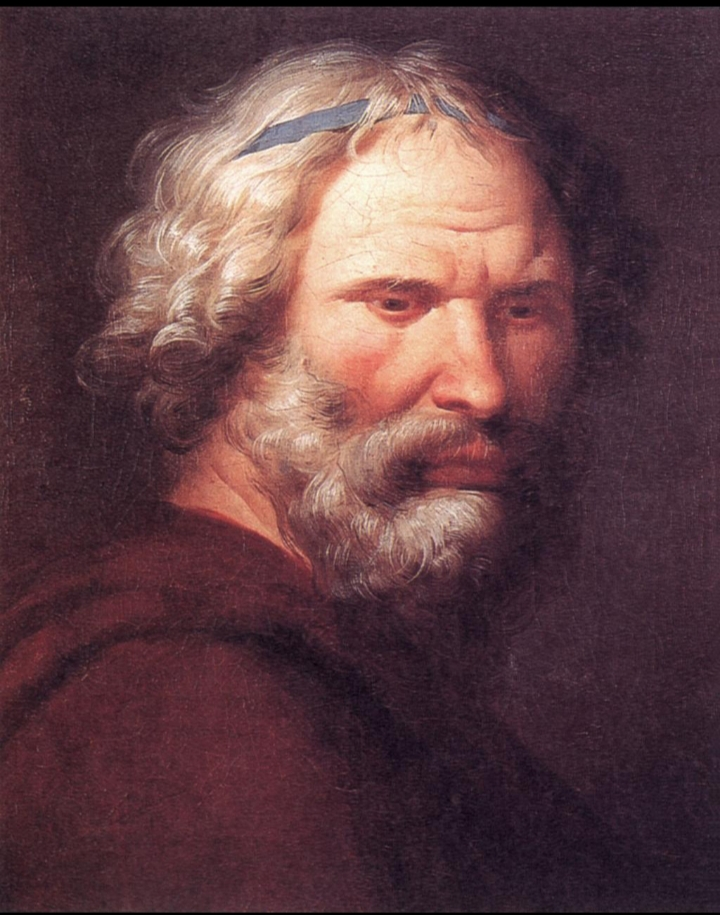

Faculté des Sciences et Technologies
Projet L2 MIA AU 2025-2026 : Exposition – « De l'Héritage Scientifique aux Formations de Demain »
Projet L2 MIA AU 2025-2026 : Exposition – « De l'Héritage Scientifique aux Formations de Demain »
A la découverte des grands esprits qui ont marqué l'histoir des mathematiques et de l'informatiques
De l'antiquité à l'epoque moderne ,de nombreux scientifiques ont consacrés leur vie à la recherche,à l'innovation et à la connaissance
Grâce à leurs decouvertes et à leurs invontions,ils ont constribué à construir les fondements des Sciences mathematiques et du monde informatique que nous connaissons aujourd'hui.

. Mathematicien et Philosophe grec.Il est connu pour le theoreme de Phytagore ,ses travaux ont constribué au developpement de la geometrie

Mathematicien grec consideré comme l'un des pere de la geometrie . Il a organisé les connaissances geometriques à partir de definition ,d'axiomes et de demonstration . Auteur des elements ,un ouvrage fondemental de mathématiques.

Mathematicien et Physicien,ingenieur grec .Il a constribué au developpement dela geometrie et du calcul d' Aires et des Volumes.Il est consideré comme l'un des plus grands scientifiques de l'antiquité.

Mathematicien suisse.Il a apporté des constribution majeures à l'analyse , à l' algebre et à la theorie des graphes .Il a constribué à populariser plusieurs notations mathematiques encore utilisées aujourd'hui.

Mathematicien Allemand .Il a constribué à la theorie des nombres , à l'algebre,à la geometri et aux statistiques .Il est souvant surnommé le prince des Mathematiciens.

Mathematicien et Physicien en anglais .Il a constribué independamment de Leibniz,au developpement des calcul infinitesimale.Il a également formuler les lois fondementales de la mecanique classiques.

Mathematicien et inventeur anglais.Il a conçu les plans de la machine analytique ,une machine mecanique programmable.Il est souvent consideré comme l'un des peres de l' ordinateur.

Mathematicienne britannique . Elle a ecrit un algorithme destiné à etre éxécuté par la machine analytiquede Babbage.

Mathematicien et informaticien britannique.Il a posé des bases theoriques essentielles de l'informatique.Il a constribué au décrytage de codes Allemands.La machine de Turing est un modele fondamental pour comprendre les calculs éffectués par un ordinateur.

Mathematicien et scientifiques americain.Il a constribué le developpement de l'Architecture moderne,l'Architecture dit de Von Neumann repose notamment sur les stockages des programmes et des données dans une memoire .

Mathematicien et ingenieur americain.Il est consideré comme l'un des fondateurs de la theorie de l' information ,il a montré comment l'algebre booléenne pouvait etre utilisée pour analyser et concervoir des circuits de commutation numerique.

Informaticien americain.Il a créer le langage de programmation C avec des constribution importante de Ken Thompson et d'autre collegues ,il a participé au developpement du systeme d'exploitation unix.